Copoly Strings: How Do They Really Work?¶
Joshua Speckman¶
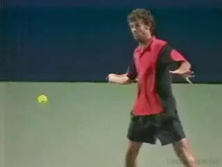
It's been almost 15 years since Guga first won the French using "copoly" strings.
Since Gustavo Kuerten won the French Open in 1997 with the aid of Luxilon copoly strings, the material has gradually displaced traditional natural gut and other synthetic strings in nearly every racket on the ATP tour.
The strings are essentially polyester with various-often slippery--chemical additives, and most accurately described as copolymers. The "luxilon shot," the characteristic, diving flight path associated with heavy topspin, has now become a characteristic of the professional game itself. There is no doubt that copoly strings have taken their place amongst the most important equipment innovations in the history of tennis.
Fundamental Change
Following his victory in the 2007 US Open final, Roger Federer explained that copoly strings had forced a tactical shift in the men's game, pushing attacking players away from the net and back onto the baseline.
"If you come into the net you're dead these days," says Nate Ferguson, who famously strung Pete Sampras' rackets for many years and is now the personal racquet and string technician for Federer, Djokovic, Murray and 13 of the ATP's top 30 players.
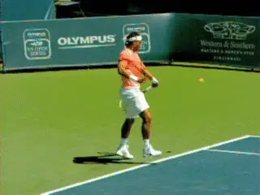
The incoming spin from players like Rafa makes volleying far more difficult.
"Whether or not the ball ends up diving at your feet -- like everyone who comes in against Rafa -- it's too hard to volley with the spin coming into your racket."
According to Ferguson, it's not just the pace and trajectory of heavy topspin balls. The other problem is the way the net rusher's own strings react.
"Let's say the net rusher is now playing with Luxilon. The ball coming in reacts differently on your strings, because of their 'grabbiness.' It makes a volley harder to hit it where you want to."
Unfortunately for attacking players, the rise of copoly strings and heavy spin coincided with the attempts of tennis authorities to counter the ascendancy of 130+ mph first serves in the 1990s. Slower court surfaces and heavier balls have helped players get more returns in play. But they also made it harder to put away volleys.
The Last Nail?
The new strings seem to be the last nail in the coffin. The combination of court surface, balls, and copoly give baseliners more time, more spin, better angles, and therefore more options, making serve and volley play all but extinct.
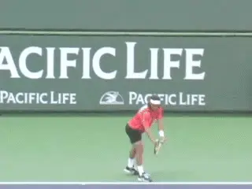
Is copoly pushing serve and volley toward extinction?
In 2003, a group of former pros, including McEnroe, Navratilova and Becker, sent the game's rules-making body, the International Tennis Federation, a letter expressing concern about the state of the game. ["The sport has lost something, lost some subtlety, some strategy, some of the nuance," they said, and argued for a return to smaller racket head sizes.]
Many former pros believe the effect of copoly strings has been just as profound on the state of the game. But despite the consensus in the playing community, until recently scientists have had no evidence that the new strings really did generate more spin than traditional natural gut or synthetic gut and "multifilament" nylon strings.
Now that has changed, as high speed videography has unlocked another invisible mystery in the pro game, similar to the insights into stroke mechanics that have evolved from the high speed stroke footage on Tennisplayer. So how exactly do these strings work, and how much additional spin is it possible to generate?
Physics of Spin
The physics of spin are in one sense very straightforward. The steeper the swing plane and the faster the swing, the more spin. And at one level that really is the bottom line.
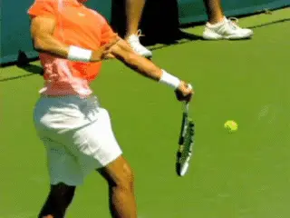
Video demonstration — the original video for this article was hosted on TennisPlayer.net.
The simple part: a fast steep swing creates more spin.
But there is no doubt that racket frame technology--large-headed, wide-faced graphite composite rackets--started the trend toward the modern, fast and steep swing technique and dramatically increased the amount of spin in the game compared to the days of wood frames.
Now the copoly string technology has taken it to another level. But the physics of how the new strings really generate extra spin has proven much more complicated and difficult to understand.
When the ball enters the string bed on a topspin shot, when it stops sliding it will "bite" the strings. At this point the back of the ball is embedded in the strings and therefore is actually moving at the same speed and in the same direction as the racket - forwards and upwards. Keep in mind this is an event occurring in only a few milliseconds, but the result is that the ball is launched from the strings spinning with topspin.
The effect is similar to what happens when a ball bounces on a court. As the bottom of the ball hits the court, it slides, slows down, and then bites. But the top of the ball is still moving forward. The result is that the ball bounces off the court rotating forward, with topspin.
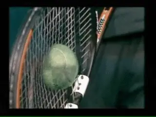
The ball bites the strings, then launches with topspin.
Why Straight?
That's the basic physics of the ball string interaction, but it turns out something more happens with copoly. Players have long noticed that the new strings don't need to be straightened between points and posited that this explained the extra spin.
The common sense explanation is simply that poly strings are sticky and don't move out of place. This notion, which many people still believe today, led to the theory that because the strings "don't move" they offer a more solid surface, and thus more friction and spin.
But there is one big difference between strings and tennis courts that illustrates why this view is incorrect. Shots hit onto a tennis court often arrive at very acute angles, in which case the ball will slide throughout the impact and the bottom of the ball will not bite. If that happens, the ball will have less spin and speed. But at the more obtuse or shallower angles a ball bounces off strings this almost never happens.
Another explanation is that copoly strings are stiff and "dead" and therefore less powerful than nylon and natural gut. So balls hit with them, the theory goes, tend to drop shorter in the court. This in turn encourages players to take bigger cuts.
Reality
But is it really true that copoly doesn't move? To see if this was true, it was necessary to slow down some very fast events to understand what was really happening during the 4 or 5 milliseconds that the ball is contact with the strings.
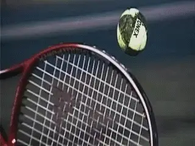
Conventional nylon strings slide, then get stuck.
Courtesy Yoshihiko Kawazoe
In 2004, a Japanese professor of human robotics, Yoshihiko Kawazoe, trained his ultra-high-speed, 10,000 frame-per-second camera on worn, notched nylon strings. This allowed him to see 40 to 50 frames during the impact.
He next filmed impacts on the same strings after they had been coated with a lubricant. Able to observe 40 or 50 frames of each ball/string impact, he solved the mystery of string movement and spin. It turns out that some strings generate more spin than others not because of more friction, but because of less. Incredibly, the strings that generate more spin are not really staying still.
Unlubricated Strings
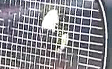
Note the alignment of the unlubricated strings before contact, basically all aligned and parallel.
As the click through video show, as the ball impacts the normal unlubricated strings, a few of the main strings slide with it. But on the rebound, one string gets stuck out of line and doesn't return to position. And that's what all players find with traditional strings--they quite quickly get displaced and stuck out of position.
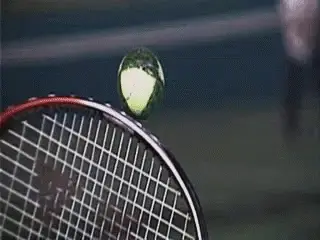
The lubricated strings slide but then kick back.
Courtesy Yoshihiko Kawazoe
Now compare that to the video of the lubricated strings. In contrast, the lubricated strings move more quickly and in greater number as the ball embeds into the strings. Then, as the ball begins to rebound, the main strings spring back into line, recovering to their original position.
Kawazoe found that this snap-back of the main strings actually gives the ball an extra kick, which puts extra spin on the ball. Amazingly, the lubricated strings generated 40% more spin.
Lubricated Strings
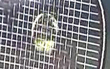
The alignment of the lubricated strings before contact is similar to the unlubricated, aligned, straight and parallel.
Relation to Copoly?
OK, fine but what is the relevance of this discussion of lubricated strings to copoly? The answer is that copoly strings, which are both slippery and stiff, behave much as lubricated strings do. They slide with the ball and then snap back quickly enough to exert a spin-boosting torque.
Copoly strings add spin not because they stay still, but because they move more freely in both directions.
Copoly strings displace but then snap back into alignment.
The International Tennis Federation reached the same conclusions in its own experiments. But these results have remained obscure and most players and coaches are unaware of them. As with Kawazoe's work, the ITF papers were published only in technical journals and in the ITF's own publications, eluding the attention of the general tennis community and press.
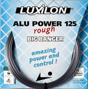
Luxilon Power Rough-35% more spin than nylon.That changed in April 2010, when two well known tennis scientists, Rod Cross and Crawford Lindsey published their own carefully controlled experiments. Their studies showed that the average copoly string generated 25% more spin than the average nylon string, and 8% more spin than natural gut.
Cross and Lindsey tested only a small sample of strings. But Stuart Miller of the ITF told me that the ITF's broader test results are comparable to theirs. In fact the ITF now attempts to test every string that hits the market for spin potential, although that data is not available to the public.
The best copoly Cross and Lindsey tested, the venerable Luxilon ALU Power Rough, which many pro players still pay for out of pocket, generated 35% more spin than the nylon average. Miller says that the best string the ITF has tested generates about 5% more than ALU. Crunching the numbers tells us that the best copoly they've tested generates around 42% more spin than the average nylon.
Early just this year, Crawford Lindsey published a series of papers providing a wealth of evidence for the slippery string theory. "Lowering the friction of the strings, if you think about it (and I'm surprised that none of the scientists thought of it before), that's how strings move: they store elastic energy and return it," says Lindsey.
"And if you can get the strings to move sideways and store elastic energy and then return it, you'll get more spin. It makes perfect sense," he adds.
Copoly Strings
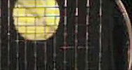
Video demonstration — the original video for this article was hosted on TennisPlayer.net.
You can see, as with the other clips above the alignment of the strings pre contact.
generated](media_copoly-strings-how-do-they-really-work/media/image17.jpg)
This still shows the displacement of the strings sliding downward at contact.
This still shows the copoly snap back to the original position. How would a player know they even moved?
Lindsey believes that the timing of the snapback is crucial, and his recent research is beginning to reveal the string characteristics that optimize this mechanism. The ITF believes that the stiffness of copoly strings is the most important factor, which relates back to ease of sliding.
If the cross strings are stiff, they may act much like high-tension rails for the main strings to glide upon. This makes sense because copoly strings are, on average, about 1.4 times as stiff as nylon, and about 2.8 times stiffer than natural gut.
In Lindsey's lab, stiffness has shown to be important, not only in facilitating sliding, but also in preventing too much movement. The snapback mechanism will fail to produce extra spin if the strings are too loose and don't have enough stored energy to return quickly enough, or if the strings are too sticky, and get stuck before they can snap back. The optimal string, it seems, has just the right combination of stiffness and slickness.
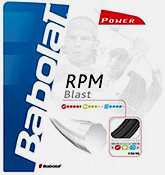
RPM Blast, a Babolat copoly used Rafa and Shiavone to win in Paris.Lindsey says the snapback mechanism is extremely complicated. The duration of this effect is about two milliseconds, or half or less of the total time the ball is on the strings. This makes it very difficult to study. Later this year, he and Cross plan to measure the spin potential of many more strings, with the aim to correlate spin production with string characteristics.
It appears that some manufacturers are well aware of the current science, and are now doing their own research to maximize the snapback effect. In the summer of 2010, Babolat, which, unlike Luxilon, tests their products for spin potential in the lab, introduced their new RPM Blast string.
Featuring a slick, "cross-linked silicone" coating and a pentagonal profile, the new string raised eyebrows when three of four finalists at the 2010 French Open used it, including Rafael Nadal and surprise champion Francesca Shiavone.
"I think all the manufacturers have started to realize that slippery strings work better in terms of spin generation," says Cross.
In 2008 Prince introduced a PTFE (aka Teflon) wrapped nylon-string. Then In January 2011 the company introduced a new copoly string that Prince says was developed using "military-grade" video equipment to analyze and identify the characteristics that optimize spin potential. They claim the new string features "optimized dynamics and friction, displacing and returning within two milliseconds," referring directly to the timing and facility of the snapback mechanism.
Could copoly affect the launch angle off the strings as well as the spin?
Additionally, Prince is the first company to claim that their string reduces the angle at which the ball bounces off the strings - the launch angle. They say that a lower launch angle will result in less depth, encouraging faster swings and thus more spin. This claim is debatable, as a higher launch angle could also increase spin by requiring a player to close the racket face to compensate. But time may tell whether this string has the desired effect.
Prince claims their new slippery string generates 9% more spin than any other copoly they've tested. If true, the string may generate as much as 55% more spin than the average nylon. We'll have to wait for independent tests to validate Prince's claim, but it does appear that science has finally caught up with the players, who said all along that copoly strings generate more spin.
Has more spin added even more power to the pro game? "If you can generate more spin, then the aerodynamic effects will bring the ball down sooner, therefore you can hit the ball harder at the same time, which is an obvious advantage," observes Stuart Miller at ITF.
"So, that's why, if you can generate more spin you can keep on swinging at the ball harder and it becomes faster. So, if somebody were to produce a string that has a step-change in spin-generating capacity then you have to assume that players would take advantage of that. And you get them swinging the racket faster, generating more spin, [with the ball] still landing in the court."
Who knows what kind of spin this guy is really capable of?
We will probably never know how much of Rafa's enormous spin results from his incredible technique and athleticism and how much from copoly strings. What we do know is that Nadal hits with more spin than any other player, with forehands in the range of 1800-4900 rpms of total spin, and an average of 3200rpm. Rafa's heaviest forehands have nearly as much total spin as Pete Sampras' legendarily heavy second serve.
Additionally, because copoly strings generate more spin from a given swingplane, Rafa does not have to swing as steep or as fast as he would with other strings.
The copoly effect may help explain how Roger Federer, with an eastern grip and 90-inch headsize, can hit forehands that spin up to 4500 revolutions per minute--although his average forehand rpms are 20% less than Rafa's.
Federer might still be capable of hitting that shot with nylon string - who knows what that guy is capable of-but to do so would require major changes in the shape of his swing.
In any case there is no longer any doubt that the effect of copoly is real--and that the intent of the string manufacturers is to make it even more effective, potentially adding even more spin to the pro game, and at all levels.
Next: Copoly was not the first string innovation to generate incredible spin. That happened over 40 years ago. The infamous "spaghetti strings" of the 1970s actually generated more spin than copoly, but were banned by the tennis establishment. Stay tuned for that story.
Want to Investigate More About Copoly for Yourself?
Y. Kawazoe and K. Okimoto, "Super high speed video analysis of tennis top spin and its performance improvement by string lubrication," The Impact of Technology on Sport, Edited by A. Subic and S. Ujihashi, ASTA Publishing, (2005).
S. Goodwill, J. Douglas, S. Miller and S. Haake, "Measuring ball spin off a tennis racket," In Proc. of the 6th Int. Conf. on the Engineering of Sport (ed. F. Moritz and S.J.Haake), Springer, New York (2006). Vol. 1, 379-384.
C. Lindsey's Tennis Warehouse University
"What Strings Generate the Most Spin?"
"String Lubrication & Movement in Spin"
R. Cross, "The Inch that Changed Tennis Forever"
R. Cross and C. Lindsey, Technical Tennis, Racquet Tech Publishing, Vista, California (2005).
particular interest in the influence of technology on tennis. His January 2011 article in The Atlantic, "The New Physics of Tennis", brought the impact of copoly strings on professional tennis to the attention of the general public and rekindled discussion about the topic in the tennis community. Joshua lives in Kunming, China with his wife, a photojournalist.